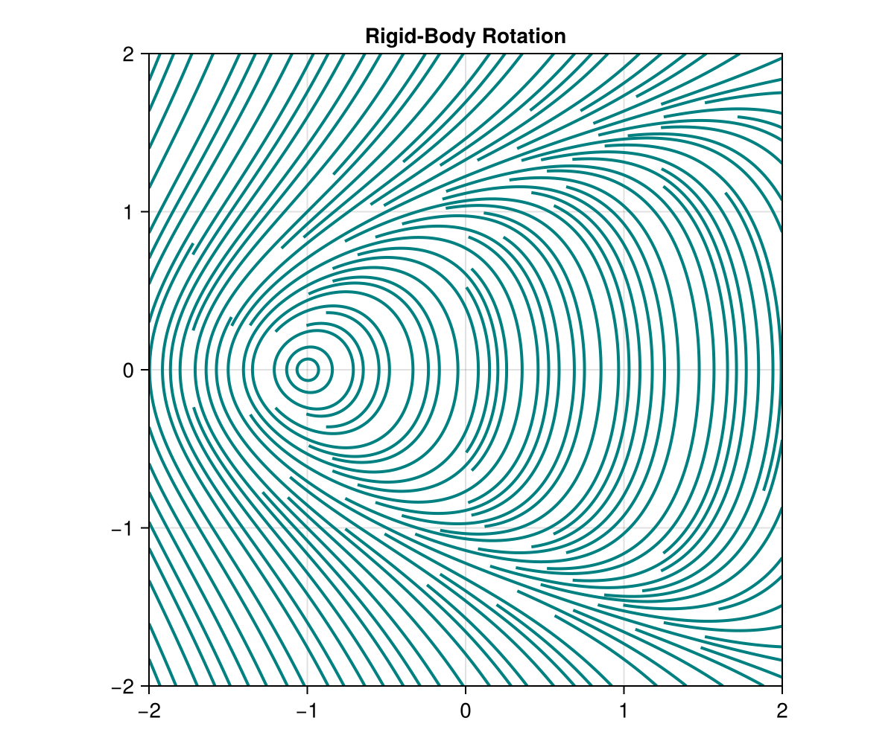
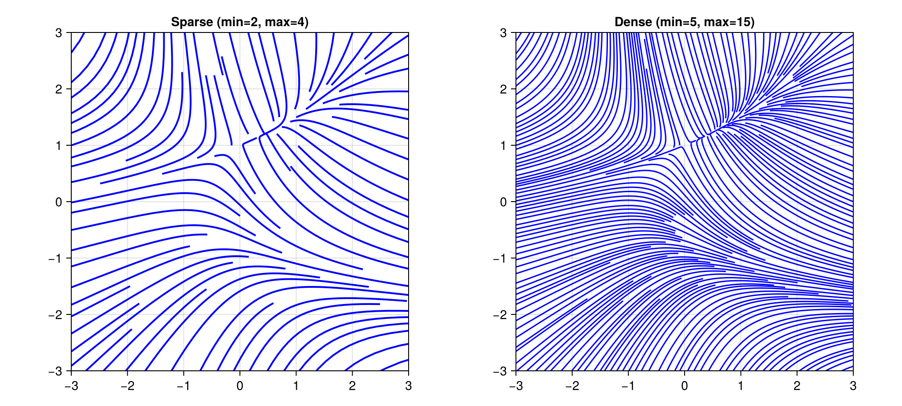
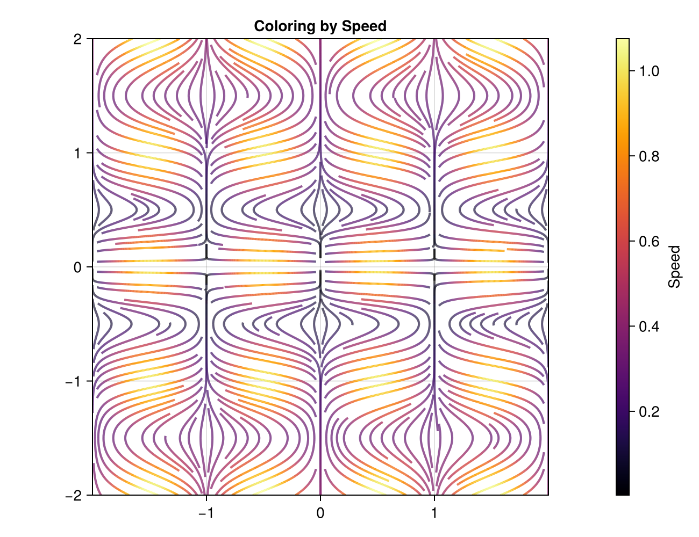
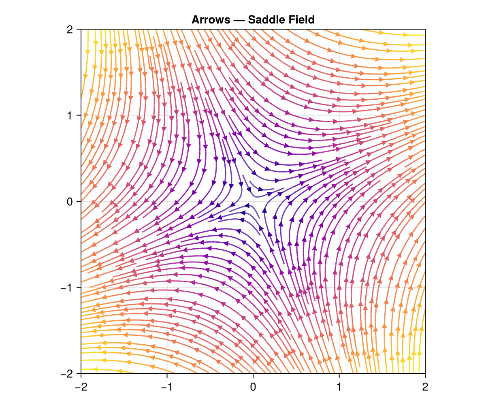
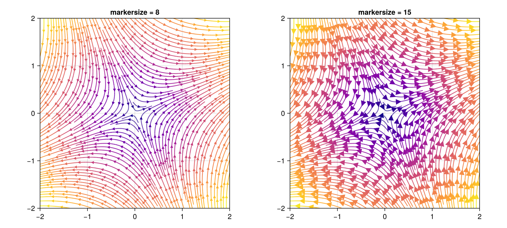
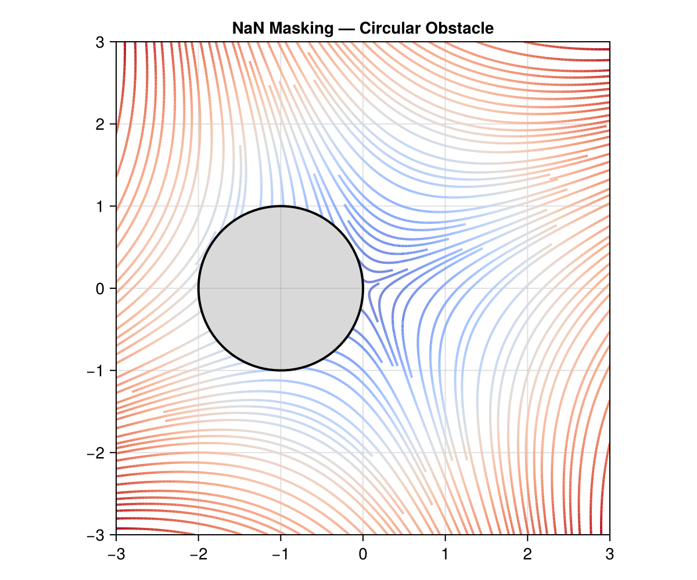
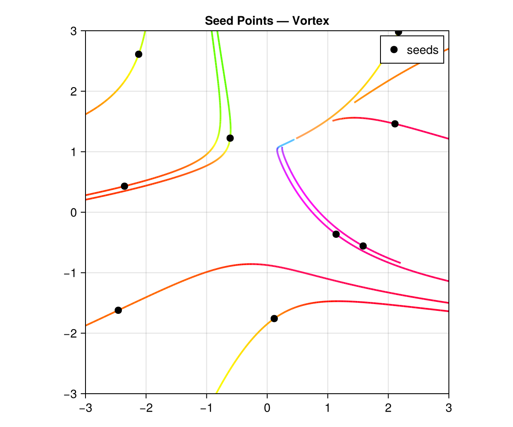
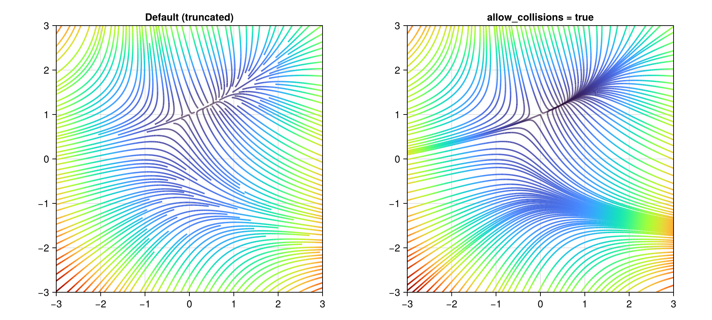
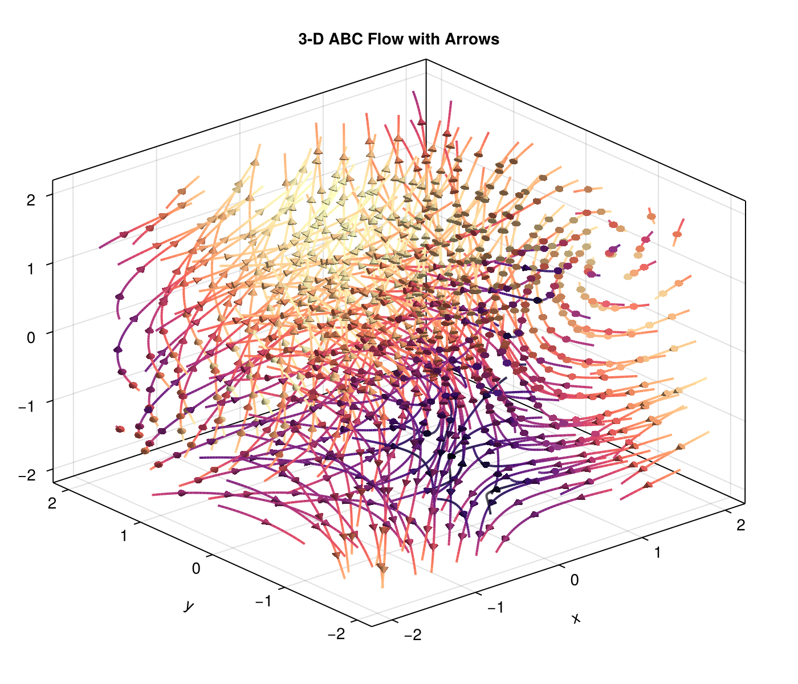

UniformStreamlines.jl
Evenly-spaced streamlines for 2-D, 3-D, and N-D vector fields in Julia.
UniformStreamlines.jl implements the Jobard–Lefer algorithm to produce streamlines that are uniformly distributed across a domain. It works with function-defined or grid-defined velocity fields and supports Plots.jl and Makie.jl for visualization.
Installation
using Pkg
Pkg.add("UniformStreamlines")Quick Start
using UniformStreamlines
xs = LinRange(-2, 2, 200)
ys = LinRange(-2, 2, 200)
str = evenstream(xs, ys, (x, y) -> -y, (x, y) -> 1 + x - y^2)Plot with Plots.jl:
using Plots
streamlines(str)Or with Makie:
using CairoMakie
streamlines(str)
Features
Function or Matrix Input
Pass velocity components as functions or pre-computed arrays:
# Functions
str = evenstream(xs, ys, (x, y) -> -y, (x, y) -> x)
# Matrices (U[i,j] is the x-velocity at (xs[i], ys[j]))
U = [-y for x in xs, y in ys]
V = [ x for x in xs, y in ys]
str = evenstream(xs, ys, U, V)Density Control
Adjust min_density and max_density to control how tightly streamlines are packed:
xs = LinRange(-3, 3, 200)
ys = LinRange(-3, 3, 200)
# Sparse
str_sparse = evenstream(xs, ys, (x, y) -> -1 - x^2 + y, (x, y) -> 1 + x - y^2;
min_density=2, max_density=4)
# Dense
str_dense = evenstream(xs, ys, (x, y) -> -1 - x^2 + y, (x, y) -> 1 + x - y^2;
min_density=5, max_density=15)Both parameters are unitless multipliers that scale an internal base grid of 10 cells per axis:
min_density(default4) — Controls the seeding grid. The domain is divided into10 × min_densitycells per axis. One candidate seed point is placed per cell, so a higher value means more candidate starting points and denser coverage.max_density(default10) — Controls the collision-detection grid. The domain is divided into10 × max_densitycells per axis. When a streamline is being integrated, it checks this finer grid to decide whether it is too close to an existing streamline. A higher value allows streamlines to pass closer together before being truncated.
The ratio max_density / min_density determines how much room there is between the minimum spacing (set by the collision grid) and the seeding spacing. Typical values:
| Style | min_density | max_density |
|---|---|---|
| Sparse | 2 | 4 |
| Normal | 4 (default) | 10 (default) |
| Dense | 5–8 | 15–30 |

Coloring
Use colorize to compute a per-point scalar for color-mapping:
str = evenstream(xs, ys, (x, y) -> sin(π*x) * cos(π*y), (x, y) -> 0.2y)
c = colorize(str, :norm)Built-in color symbols: :norm (or :speed), :vx (or :u), :vy (or :v), :vz (or :w), :x, :y, :z.
You can also pass a custom function (position, velocity) -> scalar:
c = colorize(str, (p, v) -> p[1]^2 + p[2]^2) # distance² from originWith Plots.jl, pass the color array via line_z:
using Plots
streamlines(str; line_z=c, color=:viridis)
Arrows
Add directional arrows along streamlines with with_arrows=true. Arrows are placed uniformly along the arc length of each streamline by default, so spacing is consistent regardless of how densely the path is sampled:
# Makie — uniform arrows with automatic spacing
streamlines(str; with_arrows=true)
# Plots.jl
streamlines(str; with_arrows=true)
You can control the arc-length distance between arrows with arrows_spacing:
# Tighter arrow spacing
streamlines(str; with_arrows=true, arrows_spacing=0.15)
# Wider arrow spacing
streamlines(str; with_arrows=true, arrows_spacing=0.5)Alternatively, use arrows_every to place an arrow every N-th path vertex. This is faster but produces non-uniform spacing when vertex density varies:
# Vertex-based placement (non-uniform)
streamlines(str; with_arrows=true, arrows_every=20)Control arrow size with markersize (Makie) or arrow_scale (Plots.jl):
# Makie — small vs large arrows
streamlines(str; with_arrows=true, markersize=8) # small
streamlines(str; with_arrows=true, markersize=20) # large
# Plots.jl
streamlines(str; with_arrows=true, arrow_scale=0.5) # half size
streamlines(str; with_arrows=true, arrow_scale=2.0) # double size
NaN Masking
Return NaN from velocity functions to mask out regions of the domain. Streamlines will not enter or cross masked areas:
u(x, y) = (x+1)^2 + y^2 < 1 ? NaN : x + y
v(x, y) = (x+1)^2 + y^2 < 1 ? NaN : x - y
str = evenstream(xs, ys, u, v)
Seed Points
Provide explicit seed points to control where streamlines originate:
seed_x = [-1.0, 0.0, 1.0]
seed_y = [ 0.0, 0.0, 0.0]
str = evenstream(xs, ys, (x, y) -> x + y, (x, y) -> x - y; seeds=(seed_x, seed_y))
Unbroken Streamlines
By default, streamlines are truncated when they approach an existing streamline. Set allow_collisions=true to let them pass through each other:
str = evenstream(xs, ys, (x, y) -> -y / (x^2 + y^2 + 0.1),
(x, y) -> x / (x^2 + y^2 + 0.1);
allow_collisions=true)
3-D Streamlines
The same interface extends to three dimensions:
xs = LinRange(-2, 2, 50)
ys = LinRange(-2, 2, 50)
zs = LinRange(-2, 2, 50)
str3 = evenstream(xs, ys, zs,
(x, y, z) -> -y,
(x, y, z) -> x,
(x, y, z) -> 0.3z)A more interesting example — the Arnold–Beltrami–Childress (ABC) flow with directional arrows:
A, B, C = 1.0, √2, √3
str3 = evenstream(xs, ys, zs,
(x, y, z) -> A * sin(z) + C * cos(y),
(x, y, z) -> B * sin(x) + A * cos(z),
(x, y, z) -> C * sin(y) + B * cos(x);
min_density=2, max_density=4)
c3 = colorize(str3, :norm)
using GLMakie
streamlines(str3; color=c3, colormap=:magma,
with_arrows=true, markersize=0.12)
N-D Streamlines
For arbitrary dimensions, use the tuple form:
axs = (LinRange(-2, 2, 50), LinRange(-2, 2, 50), LinRange(-2, 2, 50), LinRange(-2, 2, 50))
fns = ((x, y, z, t) -> -y, (x, y, z, t) -> x, (x, y, z, t) -> z, (x, y, z, t) -> -t)
str4 = evenstream(axs, fns)Calling Conventions
evenstream supports two equivalent calling styles:
Flat form — pass axes and velocity components as separate positional arguments. This is the most convenient syntax for 2-D and 3-D fields:
# 2-D with functions
str = evenstream(xs, ys, (x, y) -> -y, (x, y) -> x)
# 2-D with matrices
str = evenstream(xs, ys, U, V)
# 3-D with functions
str = evenstream(xs, ys, zs, (x,y,z) -> -y, (x,y,z) -> x, (x,y,z) -> 0.3z)
# 3-D with matrices
str = evenstream(xs, ys, zs, U, V, W)Tuple form — pass axes as a tuple and velocity components as a tuple. This is the general N-D interface, but works in any dimension:
# 2-D (tuple form)
str = evenstream((xs, ys), ((x,y) -> -y, (x,y) -> x))
# 3-D (tuple form)
str = evenstream((xs, ys, zs), ((x,y,z) -> -y, (x,y,z) -> x, (x,y,z) -> 0.3z))
# 4-D
str = evenstream((xs, ys, zs, ts), (f1, f2, f3, f4))
# With pre-computed arrays
str = evenstream((xs, ys), (U, V))Both forms accept the same keyword arguments (min_density, max_density, seeds, allow_collisions, etc.). The flat form is simply a convenience wrapper that forwards to the tuple form internally.
API Summary
| Function | Description |
|---|---|
evenstream | Compute evenly-spaced streamlines |
colorize | Compute per-point color values |
streamarrows | Extract arrow glyphs for visualization |
streamlines / streamlines! | Plot recipe (Plots.jl or Makie) |
Keyword arguments to evenstream
| Keyword | Default | Description |
|---|---|---|
min_density | 4 | Seeding grid density (10 × min_density cells/axis). Higher → more seed candidates → denser coverage. |
max_density | 10 | Collision grid density (10 × max_density cells/axis). Higher → streamlines may pass closer together. |
seeds | nothing | Explicit seed points (tuple/vector of D-vectors) |
min_length | 2 | Discard streamlines with fewer than this many vertices |
allow_collisions | false | Allow streamlines to cross each other |
stepsize | adaptive | Integration step size; defaults to min(norm(domain) / (10 × max_density × 10), 0.05) |
Keyword arguments for Plots.jl recipe
| Keyword | Default | Description |
|---|---|---|
with_arrows | false | Show directional arrowheads |
arrows_spacing | automatic | Arc-length spacing between arrows (uniform placement) |
arrows_every | nothing | Legacy: place an arrow every N vertices; overrides arrows_spacing |
arrow_scale | 1.0 | Scale factor for arrow size |
line_z | — | Per-point color values from colorize |
Keyword arguments for Makie recipe
| Keyword | Default | Description |
|---|---|---|
with_arrows | false | Show directional arrowheads |
arrows_spacing | automatic | Arc-length spacing between arrows (uniform placement) |
arrows_every | nothing | Legacy: place an arrow every N vertices; overrides arrows_spacing |
markersize | 12 (2-D) / 0.08 (3-D) | Size of arrowhead markers |
color | :blue | Line / arrowhead color or per-point vector from colorize |
linewidth | inherited | Width of streamlines |
colormap | — | Colormap for color-mapped data |